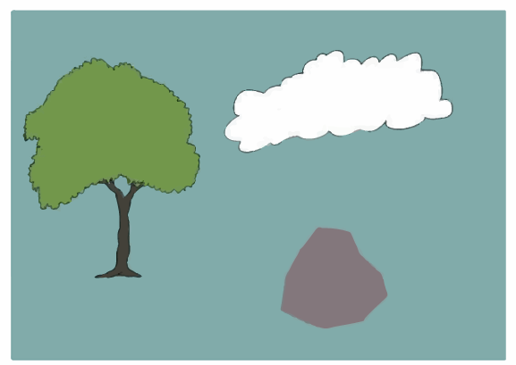

Organic shapes: These shapes are also referred to as irregular shapes. Generally, they have no proper names and are natural in their origin. Figure 1.31 shows different organic shapes.

Form
This is an element of art made of mass or shape of a work of art. Similarly, a form of a work of art or an object comprises its length, width and height. An artist must have a good understanding of the concept of form to be flexible and competent in his creative activities. Forms are categorised into two types which are geometrical or regular forms and organic or irregular forms.
Geometrical or regular forms: These forms are also recognised as accurate